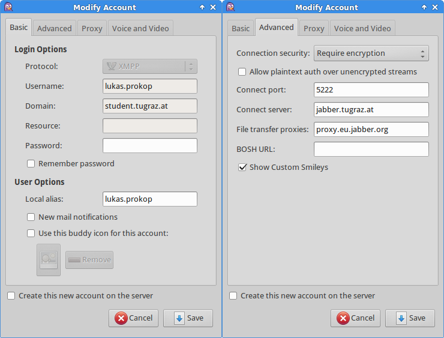

Pidgin Configuration for TU Graz Jabber Server

Note:
Username is the name of your TUG email address
Password is the password of your TUG email address
Lukas Prokop student of
Computer Science
admin@lukas-prokop.at License: Emailware